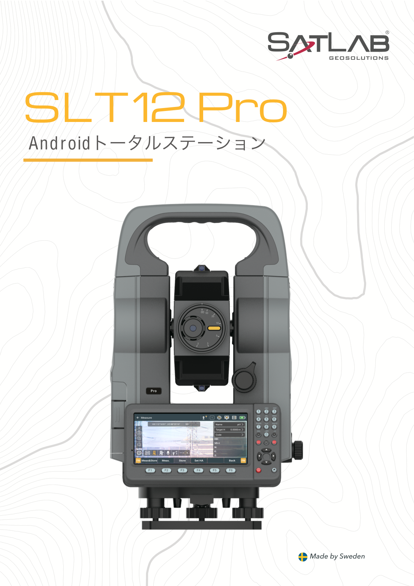

Android OS
Androidベースの操作環境により、測定、保存、確認、データ管理を一体化。3GB RAM / 32GB ROMで現場データを扱いやすくします。
SatLab CSPI JP 2026 Product Page
Androidトータルステーション / Android Total Station
SLT12 Proは、Android操作環境、内蔵カメラ、ガイドライト、高解像度ディスプレイを統合したトータルステーションです。測量、杭打ち、道路・橋梁・トンネル測量の現場で、観測作業とデータ管理を効率化します。

Core Advantages
専用カメラと大型タッチディスプレイにより、視準画像を確認しながら観測できます。フルキーボード、ガイドライト、CAD図杭打ち機能により、複雑な現場でも作業者をスムーズに誘導します。
Androidベースの操作環境により、測定、保存、確認、データ管理を一体化。3GB RAM / 32GB ROMで現場データを扱いやすくします。
2MP内蔵カメラと8MPオフアクシスカメラを搭載。視準確認、画像記録、現場トレーサビリティを支援します。
赤・緑のガイドライトにより、杭打ち時の左右方向を直感的に案内。1.5mから150mの範囲で視認性を確保します。
Applications
CAD図杭打ちモジュールにより、ポイントやラインの選択を簡単に行い、現場で素早く位置出しできます。
道路、橋梁、トンネル向けの測量ソフトを搭載し、建設現場の幅広い測設・観測作業をサポートします。
面積計算、対辺測定、後方交会、オフセット、測高など、日常測量に必要な機能をまとめて提供します。
Key Specifications